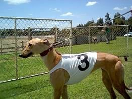

Tarpeena Tales 5
Nothing changes, it repeats itself in every generation and the only thing that is new is the people.
I am reading a history of Tarpeena and back in 1936 there was no phone available locally even though Kalangadoo had a 24 hr service. Now it’s BROADBAND. Those perishers at Kalangadoo have it and we are languishing in Tarpeena without an ADSL connection. The only difference being that back in 1936 the mill agitated for a phone line and even installed their own poles and wires. This time the mill has broadband so we residents are left to our own devices. You know the only reason we got mobile phone coverage here was because the mill gave the land and power to Telstra for the tower. Nothing changes.
It almost changed yesterday morning for a couple of hares though as they were more intent on the propagation of their species than the danger that Trixie might have presented if she wasn’t blind in one eye and has trouble seeing out of the other.She caught their scent and dived into the long grass , which is where most lovers seem to hide, and a quick end was brought to the nuptials.Their speed meant they were soon out of Trixies sight, about a yard,and lo and behold they continued their courtship. He dancing exactly in tune with her. The Power of Love.
If she had caught one it would have been a toss up between whether it provided dinner for me or the greyhound which needs to know what a hare looks like.
Yes there was an exciting time on the weekend as the dog Scottish Fling we own in partnership with Ron Moir ,  see Ron’s picture…….,
see Ron’s picture…….,
Martin Moir and John Davies actually raced on Saturday.
It was a perfect day and we all gathered at the track, except for Martin who, wisely, was earning money instead of spending it, but we were not in the promised kilts as Martin wasn’t there to share the embarrassment.
Anyway the dog looked a picture, see picture, 

Malcolm Bigham is the local bookie and he is going to pay for her nomination in the next race meeting as he delights in taking money from mugs that should know better.
Anyway a couple of beers later and all was well and after giving some more money to Bigham we called it a day.
Involvement in the sport of dish licking runners is very exciting. Mind you the comment was made by another owner who was very discourteous that she would have trouble beating Alfie. See picture of Alfie. Notice his missing leg? Ignorant bastard.
Notice his missing leg? Ignorant bastard.
John Davies came over for the race and stayed the night. We had a pleasant evening out on the back verandah playing knockout whist and listening to Juke box Saturday night on the radio. Can’t beat the 70”s and 80’s music especially if you were alive then.
Nuran proved deadly at cards, what do they say about lucky at cards unlucky in love?
Whatever they say its bull shit because she married me. Then again.
Anyway she won but she let me have a consolation game as she knows I sulk if I don’t win once. Poor John has inherited his father’s genes. Plain unlucky at everything.
Today was another perfect day in paradise, but not here. It was stinking hot with a gale blowing yet it did moderate later in the afternoon and I went for my therapeutic bike ride. Probably shouldn’t have -as a spoke pinged itself to death and the last mile or so was done with a buckled wheel rubbing on the brakes on every revolution. Still I am in it for fitness.
One of the things I love in summer is watering the garden with the sprinklers so they were put on while Nuran was cooking tea and I watched the water reviving the garden and the blackbirds giving themselves a bath.
Right now it is a balmy evening but ,with no John Davies to beat, Nuran is relaxing and I am in here typing. We do miss the company.
Nothing changes.
11.12.05